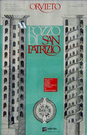
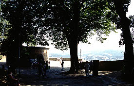
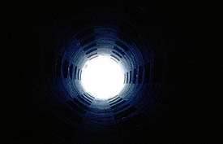

←資料写真；東京都羽村市のまいまいず（中央が井戸）
←資料写真；東京都羽村市のまいまいず（中央が井戸）
ここはこの地方に良く見られる山上の城壁都市である。 山の上、というか険しい崖の上にあるオルビエートの街はその古い街並とモザイク画が有名な大聖堂でその名を知られている。 山上の城壁都市というと何やらロマンチックなイメージだがこれはもちろん外敵に備えてつくられたのであり、電車の車窓からも似たような街が幾つも見えたので、私のような観光客にとっては風光明美なトコロで済むのだが当時の人達にとっては死活問題だったはずであり、それはそれで御苦労様、なのである。 さて、山上の城壁都市といっても仙人が住んでいるわけではないので雲や霞を食っていたわけではない。城壁都市だけに籠城する事もあったかもしれない。その際の最大のネックは水だろう。 そこで登場するのがこちら、サン パトリツッオの井戸である。 1527年、ドイツ軍の侵攻に備えてクレメンテ7世教皇によってつくられてもので、直径13.4メートル、深さは62メートルという代物だ。 地底62メートルの井戸までは螺旋階段が設けられている。 ここで思い出されるのは、日本に幾つかあるまいまいずという井戸だ。
←資料写真；東京都羽村市のまいまいず（中央が井戸）
規模に差はあるものの低位置の井戸から水を運ぶという基本的なコンセプトは同じだ。
山の上に行くケーブルカーの駅にあったポスター  御覧の通り見事な二重螺旋構造である。 これは当時、騾馬だか驢馬だかに水をひかせていたので、上りと下りがぶつからないためにこうなったらしい。 ・・・そろそろお気付きのかたもいらっしゃるかと思うが、当ページで寺でもない井戸を取り上げる理由は唯一つ。 会津のさざえ堂をそのまんま地中にひっくり返した空間だからである。 工法、規模こそ違えど二重螺旋によってつくられるこの井戸はまさにネガさざえ堂なのである。
ケーブルカーを使い山の上に着くと井戸はある。中心部から見ればこの辺は街はずれになる。  崖の上だけに見晴しの良いところだ。で、入口は写真左の円筒形の建物。地上部分はこれだけである。 チケットを買い中に入る。ここも市街の中心部ほどではないが結構観光客が来ている。
で、内部。中心の井戸の部分は吹き抜けになっている。深い、かなり深い。62メートルといえば例えはナンだが久留米成田山の慈母観音と一緒。
そしていよいよ井戸である。井戸の底がキラキラ光っているのは無数のコインである。 水見たらお賽銭あげちゃうのは世界共通なんだろうか？ 注目すべくきは井戸の中央に橋が架けられている事。会津のさざえ堂も最上階の上りと下りの分節点には太鼓橋が架けられている。奇妙な符号である。 というか、水を汲むのだから橋があって当たり前なんだけど、逆にさざえ堂の方に何故太鼓橋が架かっているかの方が不思議に思える。 もしかして、さざえ堂って、ここパクった？ それならそれでさざえ堂のルーツが解明されて一安心、さざえ堂研究の大家、故小林文次先生も草葉の陰で安心されている事だろうが、そこはホレ、鎖国時の日本にこんなマニアックな井戸の情報など入って来るはずもなく、やっぱり謎なのである。 さて、この井戸、さざえ堂をネガティヴにした写し鏡のように例えて来たが唯一決定的な違いがある。 もちろん工法、規模は違うのだがそれ以上に違うのは通路の捉え方なのだ。 この井戸は〜もちろん井戸だから〜その目的は一番底にある井戸に他ならない。従って二重螺旋の通路というものは井戸に行って帰って来るためのものであって、いってみれば目的のための手段なのである。 むろん現在ではその手段のユニークさゆえ、こうして観光客が集まっているのだが。 一方さざえ堂における二重螺旋通路は単なる手段ではない。その二重螺旋の中を人が歩くという行為こそが目的なのだ。 従ってこの井戸の通路は合理主義の産物であり、歩いている間、意識は常に目的地（井戸と出口）に向かっている。 しかしさざえ堂の場合は通路全体を参拝路とする事で始まりも終わりも無い無限ループのような空間をつくるための建築、と私は想像する。 ま、お寺と井戸ですからどっちがどうと比べるのも野暮なんですけど。
で、最後に橋から真上を見上げてパチリ。  上りの写真が無いじゃないかとかいわないでね。 登るの大変だったんですから。
珍寺大道場 HOME